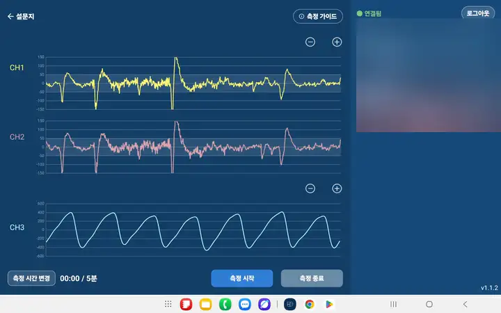
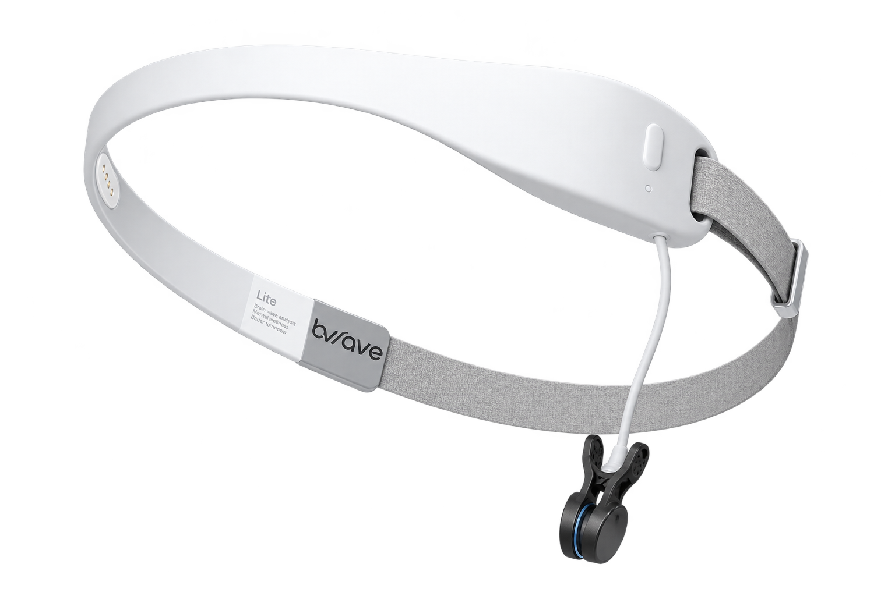
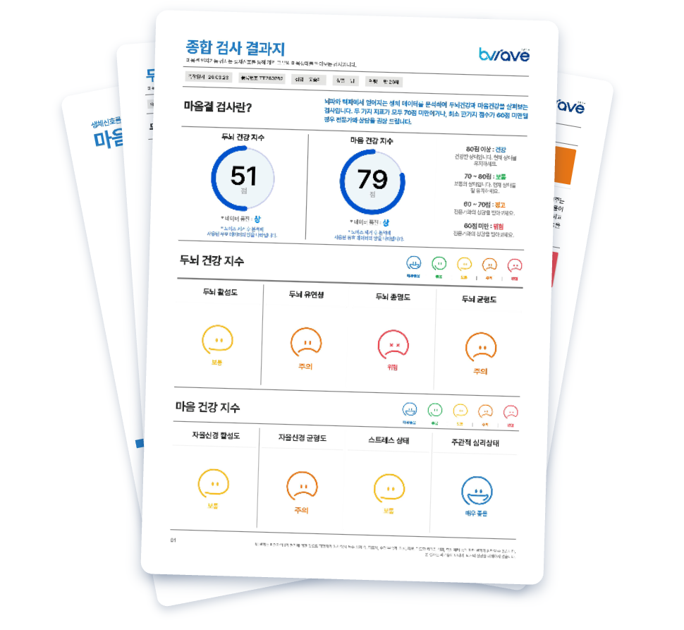

“상담의 변화를 설명할 수 있는
새로운 언어가 생겼습니다.”
심리상담센터 원장 · 14개월간 마음결 활용
뇌파·맥파 지표로 상담 전후 변화를 수치로 기록하고 회기별 추이를 비교합니다.
자신의 상태를 리포트로 확인하며 상담에 더 깊이 몰입합니다.
신뢰가 쌓인 관계는 다시 찾아옵니다. 데이터 기반 상담이 지속률을 높입니다.
정신건강 평가의 오늘과 내일, 그리고 상담 현장의 실제.
특별강연 · 연사
정신건강의학과 전문의
지금 우리 사회가 마주한 정신건강의 현실과 풀어야 할 과제를 짚습니다.
주관적 판단을 넘어 데이터로 설명하는 평가가 필요한 이유를 이야기합니다.
뇌파·심박변이도가 마음 상태를 어떻게 드러내는지 과학적으로 풀어냅니다.
실제 상담 현장에서 마음결이 만든 변화와 효과를 사례로 공유합니다.
데이터가 상담을 어떻게 바꿔갈지, 그 다음 이야기를 나눕니다.
듣기만 하는 세미나가 아닙니다. 직접 경험하고, 나누고, 연결됩니다.
현장에서 직접 측정하고 개인 리포트를 받아보세요.
스크롤하여 자세히 보기실제 현장의 생생한 적용 경험을 함께 나눕니다.
궁금한 점을 연사에게 직접 묻고 답을 얻습니다.
같은 고민을 가진 동료 전문가들과 연결됩니다.
측정 기기를 착용하고 앱에 연결해 측정하면, 분석 리포트로 결과를 받아봅니다.

블루투스로 앱과 연결해 뇌파·맥파를 실시간 측정합니다.

머리에 2채널 뇌파 측정 기기를 착용합니다.

측정 결과를 직관적인 리포트로 받아봅니다.
머리에 2채널 뇌파 측정 기기를 착용합니다.
블루투스로 앱과 연결해 뇌파·맥파를 실시간 측정합니다.
측정 결과를 직관적인 리포트로 받아봅니다.
2026.09.17 (목) 10:00–12:00 · 강남취창업허브센터 지하2층 대강당